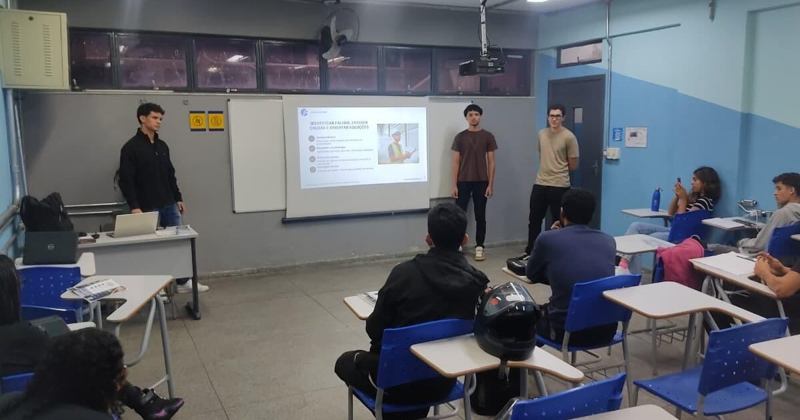
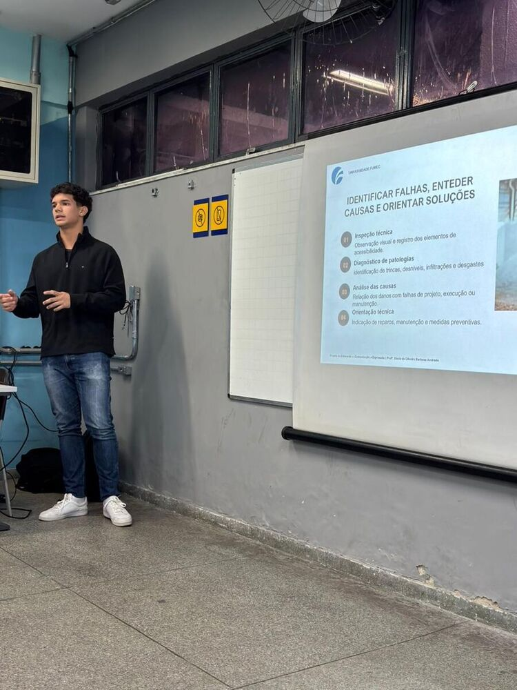
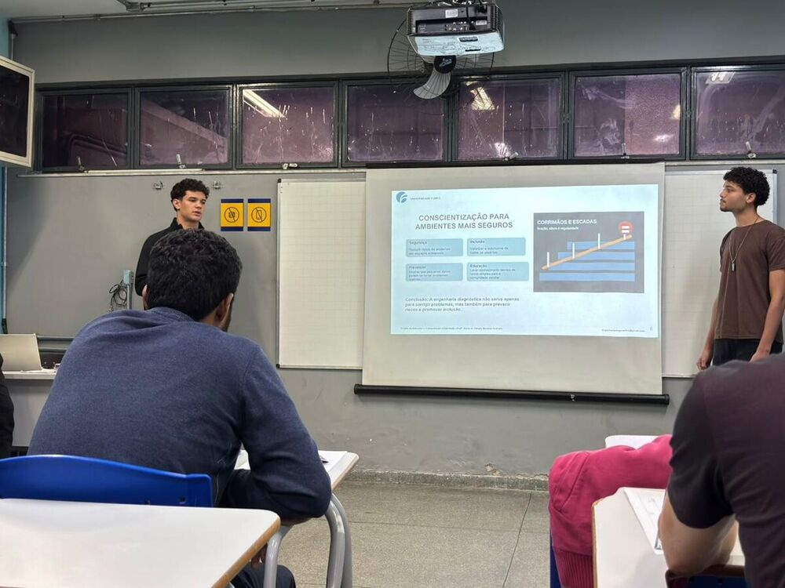
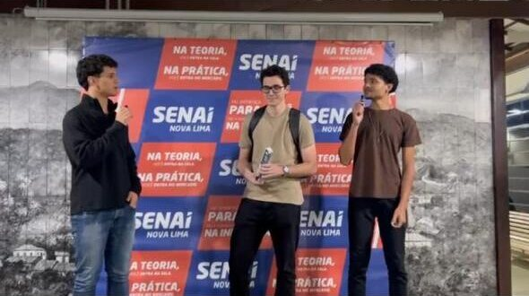

Introdução
Uma rampa pode existir e ainda não ser segura. Um piso tátil pode estar instalado e, mesmo assim, ser interrompido por obstáculos. Um corrimão pode parecer adequado à primeira vista, mas estar solto, deteriorado ou mal posicionado.
Foi a partir dessa diferença — entre simplesmente existir e realmente funcionar — que desenvolvemos o projeto de extensão Engenharia Diagnóstica e Acessibilidade, no curso de Engenharia Civil da Universidade FUMEC. O objetivo foi aproximar o conhecimento técnico da realidade cotidiana e mostrar como inspeção, diagnóstico e manutenção preventiva contribuem para ambientes mais seguros, acessíveis e inclusivos.
O trabalho reuniu pesquisa bibliográfica, estudo de normas técnicas, observação de pontos de acessibilidade, produção de material educativo, aplicação de questionário e uma ação de conscientização no SENAI Nova Lima. Para mim, foi também uma oportunidade de perceber, ainda nos primeiros períodos da graduação, que a engenharia começa antes do cálculo de uma solução: ela começa pela capacidade de observar, interpretar e comunicar um problema com responsabilidade.
Engenharia diagnóstica além dos reparos
A engenharia diagnóstica investiga o estado de uma edificação ou de seus sistemas para identificar manifestações patológicas, compreender possíveis causas e orientar medidas corretivas ou preventivas. Em termos práticos, ela ajuda a responder quatro perguntas:
- O que está acontecendo?
- Por que o problema pode ter surgido?
- Qual é o risco associado a ele?
- Que tipo de ação técnica deve ser considerada?
No projeto, organizamos essa lógica em quatro eixos: inspeção técnica, identificação de patologias, análise das causas e orientação técnica. Esse percurso evita olhar apenas para o sinal visível. Uma fissura, um desnível ou um corrimão instável não são somente imperfeições estéticas; podem indicar falhas de projeto, execução, uso ou manutenção e afetar diretamente a segurança de quem utiliza o espaço.
Identificar falhas, compreender causas e orientar soluções: esse foi o princípio que conduziu o projeto.
Por que colocar a acessibilidade no centro?
A acessibilidade não se resume à presença de uma rampa ou de uma placa. Ela depende do funcionamento integrado de rotas, pisos, inclinações, corrimãos, escadas, sinalização e áreas de circulação.
Por isso, nosso olhar abrangeu tanto manifestações construtivas — como fissuras, desgaste, infiltrações e desníveis — quanto falhas de instalação, sinalização e manutenção. Entre os exemplos estudados estavam:
- rampas com inclinação inadequada, fissuras ou desníveis;
- pisos quebrados, irregulares ou escorregadios;
- piso tátil ausente, danificado, descontínuo ou obstruído;
- corrimãos soltos, deteriorados, ausentes ou instalados de forma inadequada;
- degraus sem sinalização;
- obstáculos em rotas que deveriam permanecer livres.
Essas situações podem reduzir a autonomia e aumentar o risco de acidentes, especialmente para pessoas com deficiência, pessoas idosas, gestantes e pessoas com mobilidade reduzida. Acessibilidade não é um detalhe posterior da obra: é uma condição de segurança, dignidade e uso adequado do espaço.
Da pesquisa à ação
Adotamos uma abordagem de pesquisa-ação, combinando estudo técnico e atividade educativa. O processo foi organizado em sete etapas:
- pesquisa bibliográfica sobre engenharia diagnóstica, patologias e acessibilidade;
- estudo das ABNT NBR 9050, NBR 16747 e NBR 15575;
- observação e registro fotográfico de mais de oito pontos de acessibilidade;
- classificação dos problemas conforme o tipo, a urgência e o impacto no uso;
- criação de folder, apresentação e recursos digitais em linguagem acessível;
- aplicação de questionário eletrônico;
- apresentação dos resultados à comunidade escolar.
As normas ofereceram a base para transformar observações em critérios. A ABNT NBR 9050 orientou a leitura dos elementos de acessibilidade; a NBR 16747 contribuiu com princípios de inspeção predial; e a NBR 15575 ampliou a discussão sobre desempenho das edificações.
Escopo educativo: não realizamos um laudo profissional nem uma certificação de conformidade. A proposta foi exercitar a leitura técnica do ambiente construído e traduzir esse conhecimento para a comunidade escolar.
Mais do que reunir referências, precisávamos transformar conteúdo técnico em comunicação. O folder sintetizou os conceitos e os benefícios da identificação precoce. A apresentação organizou o raciocínio visualmente, enquanto o site do projeto ampliou o acesso ao conteúdo com explicações, metodologia, checklist, galeria e referências.
O encontro com os alunos do SENAI Nova Lima
O projeto foi concluído em 28 de maio de 2026, com a realização do Seminário dos Resultados no SENAI Nova Lima. A equipe foi formada por Bernardo Lopes, Emily Suelen, Guilherme Menezes, Gustavo Fanuchi e Luis Fernando, sob orientação da professora Sônia de Oliveira Barbosa Andrade.
Durante a apresentação, explicamos como reconhecer falhas em rampas, pisos, corrimãos, escadas e sinalização; discutimos possíveis causas; e mostramos por que inspeções e manutenções periódicas são importantes. A intenção não era formar especialistas em uma única conversa, mas oferecer referências para que problemas frequentemente naturalizados passassem a ser percebidos como questões de segurança e inclusão.
A experiência também exigiu uma competência essencial para qualquer engenheiro: adaptar a linguagem ao público sem perder a precisão. Relacionar conceitos a situações visíveis no dia a dia transformou um trabalho acadêmico em uma experiência real de comunicação.




O que 72 respostas revelaram
O questionário eletrônico reuniu 72 respostas. Do público participante, 81,9% cursavam o ensino técnico, 9,7% o ensino superior e 8,4% estavam em outras modalidades.
| Problema observado | Respostas | Percentual |
|---|---|---|
| Corrimão solto ou mal instalado | 63 | 87,5% |
| Piso tátil danificado ou ausente | 60 | 83,3% |
| Rampa muito inclinada | 58 | 80,6% |
| Piso quebrado ou irregular | 18 | 25,0% |
| Obstáculos no caminho | 15 | 20,8% |
| Degraus sem sinalização | 12 | 16,7% |
| Falta de corrimão | 11 | 15,3% |
| Nunca observou problemas | 1 | 1,4% |
Como a questão permitia selecionar mais de uma alternativa, os percentuais não devem ser somados. Eles mostram a recorrência com que cada tipo de falha foi reconhecido.
Outro resultado chamou atenção: 97,2% responderam que esses problemas podem causar acidentes. O mesmo percentual reconheceu que a falta de manutenção pode prejudicar pessoas com deficiência ou mobilidade reduzida — 70,8% disseram que prejudica “um pouco” e 26,4%, “muito”.
A análise revelou ainda um contraste importante: muitos participantes reconheciam as falhas no cotidiano, mas o termo engenharia diagnóstica ainda era pouco conhecido em profundidade. Isso reforçou a utilidade da ação educativa.
Atividade realizada não é o mesmo que impacto comprovado
Uma das lições mais importantes da análise de projetos de extensão foi separar o que fizemos daquilo que conseguimos evidenciar como resultado.
As atividades foram a pesquisa, os registros, o questionário, a produção do folder, do site e da apresentação. Os resultados imediatos foram as 72 respostas coletadas, o mapeamento das falhas mais reconhecidas e a produção de recursos que tornaram o assunto mais compreensível.
Os dados indicam forte reconhecimento dos riscos associados à falta de manutenção e às falhas de acessibilidade. Entretanto, eles não comprovam, sozinhos, uma mudança de comportamento a longo prazo nem a correção física dos problemas. Para avaliar esses impactos, seriam necessários acompanhamento posterior, comparação antes e depois da ação e diálogo com os responsáveis pela manutenção dos espaços.
O que essa experiência acrescentou à minha formação
O projeto aproximou conceitos da Engenharia Civil de problemas que muitas vezes são vistos, mas não analisados. Entre os principais aprendizados que levo estão:
- Observar antes de propor: uma solução adequada depende de reconhecer corretamente o problema, seu contexto e suas possíveis causas.
- Comunicar também é fazer engenharia: normas e critérios técnicos precisam ser traduzidos com clareza para diferentes públicos.
- Trabalhar com dados exige cuidado: números ajudam a sustentar conclusões, mas precisam ser interpretados dentro dos limites do método.
- A manutenção faz parte da acessibilidade: não basta projetar corretamente; é necessário conservar os elementos.
- Engenharia tem responsabilidade social: decisões sobre o ambiente construído afetam autonomia, segurança e participação.
Também aprendi sobre colaboração. Cada etapa — pesquisar, organizar dados, criar materiais, construir o site e apresentar — dependia da integração entre os membros da equipe. O resultado não foi apenas um produto acadêmico, mas um exercício de responsabilidade compartilhada.
Próximos caminhos
O projeto pode continuar com questionários antes e depois das ações educativas, ampliação da diversidade do público, criação de checklists simplificados para comunidades escolares e acompanhamento dos encaminhamentos de manutenção.
O site permanece como registro público e material de consulta. Nele, qualquer pessoa pode conhecer a metodologia, explorar os principais tipos de falha e acessar uma mensagem que resume o propósito de todo o trabalho:
Um espaço acessível é um espaço para todos.
Mais do que corrigir problemas depois que eles aparecem, a engenharia diagnóstica ajuda a prevenir riscos. Quando aplicada à acessibilidade, ela reforça algo essencial: construir e manter espaços seguros é uma forma concreta de promover inclusão.
- Equipe
- Bernardo Lopes, Emily Suelen, Guilherme Menezes, Gustavo Fanuchi e Luis Fernando
- Orientação
- Prof.ª Sônia de Oliveira Barbosa Andrade
- Instituições
- Universidade FUMEC e SENAI Nova Lima
- Componente
- Formação de Extensão — Dimensão da Comunicação e Expressão
- Data da ação
- 28 de maio de 2026
Referências técnicas
- ABNT NBR 9050: Acessibilidade a edificações, mobiliário, espaços e equipamentos urbanos. Rio de Janeiro: ABNT, 2020.
- ABNT NBR 15575: Edificações habitacionais — Desempenho. Rio de Janeiro: ABNT, 2013.
- ABNT NBR 16747: Inspeção predial — Diretrizes, conceitos, terminologia e procedimento. Rio de Janeiro: ABNT, 2020.
- HELENE, Paulo R. L. Manual para reparo, reforço e proteção de estruturas de concreto. 2. ed. São Paulo: Pini, 1992.
- THOMAZ, Ercio. Trincas em edifícios: causas, prevenção e recuperação. São Paulo: Pini; IPT; EPUSP, 1989.
- TRIPP, David. Pesquisa-ação: uma introdução metodológica. Educação e Pesquisa, v. 31, n. 3, 2005.
Perguntas frequentes
O que é engenharia diagnóstica?
É a área que investiga as condições de edificações e sistemas construtivos para identificar falhas, manifestações patológicas, possíveis causas e medidas corretivas ou preventivas.
Quais elementos de acessibilidade foram estudados?
O projeto abordou rampas, pisos, piso tátil, corrimãos, escadas, sinalização e rotas de circulação, considerando problemas construtivos, de instalação e de manutenção.
Qual foi o principal resultado do questionário?
Entre as 72 respostas, os problemas mais reconhecidos foram corrimãos soltos ou mal instalados, pisos táteis danificados ou ausentes e rampas muito inclinadas. Além disso, 97,2% reconheceram o risco de acidentes.
O projeto realizou uma inspeção profissional?
Não. A atividade teve finalidade acadêmica e educativa. Não substitui inspeção, laudo ou avaliação formal realizada por profissional legalmente habilitado.
Conheça também o site completo do projeto ou volte à página de artigos para acompanhar as próximas publicações.